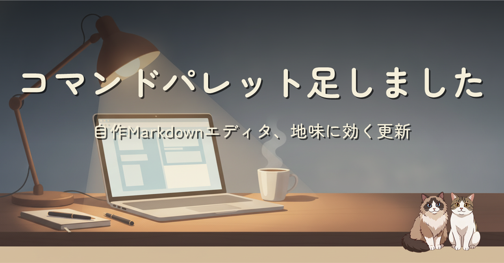
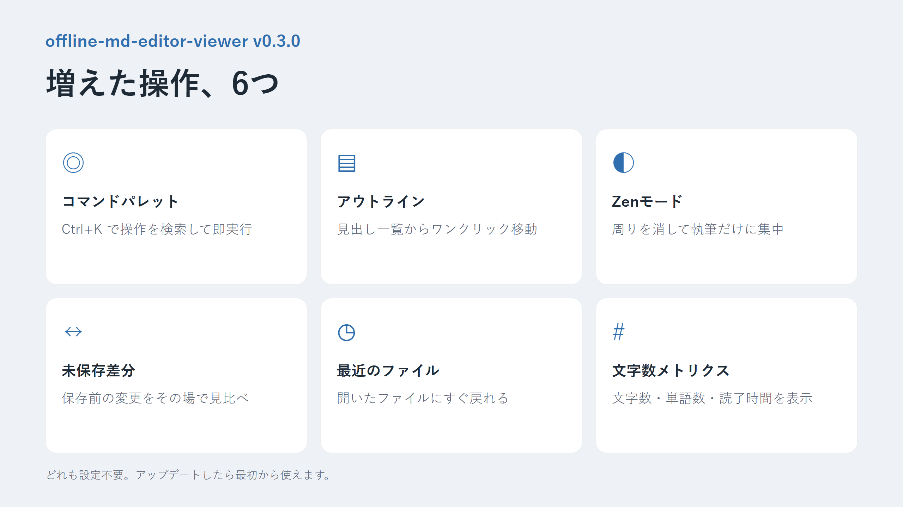

自作のオフライン Markdown エディタ offline-md-editor-viewer に、コマンドパレットや Zen モードなど地味に効く機能を足しました。派手さはないけれど、書きながら使うと手が止まらなくなる系の更新です。
自作の offline-md-editor-viewer に、コマンドパレット（Ctrl+K）・見出しアウトライン・Zen モード・未保存差分ビュー・最近使ったファイル・文字数メトリクスを追加しました。あわせて Windows デスクトップ版の細かい不具合修正と、同梱ライブラリの更新も実施しています。
